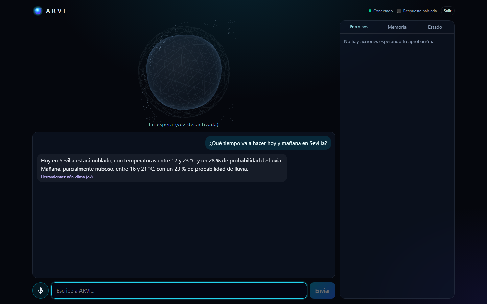

#12.1 Instalación existente
| Propiedad | Valor |
|---|---|
| Contenedor | n8n-local (n8nio/n8n:latest, versión 2.39.5 comprobada el 2026-11-12), proyecto Compose en %USERPROFILE%\n8n-local |
| Puerto | 5678 |
| Persistencia | Volumen n8n-local_n8n_data |
| Salud | GET /healthz → 200 (prueba P-000) |
La versión y los parámetros de los nodos se comprobaron dentro del propio contenedor y con la
especificación OpenAPI que sirve el servidor (GET /api/v1/openapi.yml), no de memoria. En n8n 2.x,
«activar» un workflow se llama publicar (POST /workflows/{id}/publish).
#12.2 Hallazgos de seguridad
WEBHOOK_URLapunta a un túnel rápido de Cloudflare (*.trycloudflare.com): mientras el túnel esté activo, el panel y los webhooks de n8n son accesibles desde Internet.- El puerto 5678 se publica en todas las interfaces (
0.0.0.0).
Recomendación: ARVI se conecta solo por 127.0.0.1. Se propone publicar el puerto como
127.0.0.1:5678:5678 y no usar el túnel para ARVI. No se ha modificado nada: recrear el
contenedor requiere la autorización del usuario. Como mitigación, todos los webhooks de ARVI exigen
un token (apartado 12.3), así que no se pueden lanzar desde el túnel sin conocerlo.
#12.3 Diseño de la integración
%% figura: Flujo de una automatización de n8n lanzada por ARVI
sequenceDiagram
participant U as Usuario
participant A as Agente ARVI
participant R as ToolRegistry (permisos)
participant C as N8nClient
participant N as n8n (127.0.0.1:5678)
U->>A: «¿Qué tiempo hará en Sevilla?»
A->>R: n8n_clima(ciudad="Sevilla", dias=1)
R->>R: valida argumentos (esquema cerrado) y nivel
R->>C: trigger("clima", {...})
C->>N: POST /webhook/arvi/clima + X-ARVI-Token
N->>N: Header Auth → Open-Meteo → resumen
N-->>C: JSON (recortado a 8 000 caracteres)
C-->>A: <resultado_automatizacion> datos </resultado_automatizacion>
A-->>U: respuesta en lenguaje natural| Pieza | Archivo | Función |
|---|---|---|
| Cliente | backend/arvi/integrations/n8n.py |
API pública (/api/v1, cabecera X-N8N-API-KEY) y webhooks |
| Catálogo | config/automations.yaml |
Automatizaciones que el modelo puede usar, con argumentos y nivel |
| Herramientas | backend/arvi/tools/automation_tools.py |
Una herramienta tipada n8n_<id> por entrada del catálogo |
| Plantillas | infrastructure/n8n/workflows/*.json |
Workflows «ARVI · Eco» y «ARVI · Clima» |
| Aprovisionamiento | backend/arvi/integrations/n8n_provision.py, scripts/n8n/provision.py |
Crea la credencial y los workflows de ARVI |
Garantías de seguridad, todas cubiertas por pruebas automáticas (P-022):
- Solo elementos de ARVI. El cliente se niega a leer, publicar o consultar ejecuciones de
workflows cuyo nombre no empiece por
ARVI, y solo crea workflows y credenciales con ese prefijo. El listado se filtra también en el cliente, por si el filtro del servidor fuese más amplio. - Solo por loopback.
N8N_BASE_URLdebe ser127.0.0.1/localhost; ARVI nunca usa el túnel. - Webhooks autenticados. Cada llamada lleva la cabecera
X-ARVI-Token(N8N_WEBHOOK_SECRET), que n8n comprueba con una credencial Header Auth llamada «ARVI · Webhook token». - Sin webhook libre. No existe una herramienta del tipo «llama al webhook que quieras». El modelo solo ve las automatizaciones declaradas en el catálogo, con un esquema cerrado: los argumentos no declarados o fuera de rango se rechazan antes de llamar a n8n (INC-016).
- Resultados como datos. La respuesta de n8n se recorta a 8 000 caracteres y se entrega al
modelo dentro de
<resultado_automatizacion>, como dato externo y no como instrucción. - Niveles de permiso. Cada automatización declara su nivel (0-3) y pasa por
ToolRegistryigual que cualquier otra herramienta; las de nivel 2 o más piden confirmación.
#Workflows iniciales
| Workflow | Webhook | Qué hace | Nivel |
|---|---|---|---|
| ARVI · Eco | POST /webhook/arvi/eco |
Devuelve el mensaje recibido; sirve para comprobar la conexión | 0 |
| ARVI · Clima | POST /webhook/arvi/clima |
Geocodifica la ciudad y consulta la previsión en Open-Meteo (gratuito, sin clave) | 0 |
#Aprovisionamiento
scripts/n8n/provision.py funciona por defecto en modo simulación: muestra qué crearía sin
cambiar nada. Con --aplicar:
- Si
N8N_WEBHOOK_SECRETestá vacío, genera un token aleatorio y lo guarda en.env. Nunca lo muestra por pantalla. - Crea la credencial Header Auth «ARVI · Webhook token».
- Crea y publica los workflows de las plantillas que aún no existan. Si ya existe un workflow ARVI con el mismo nombre, lo deja como está, así que el script es idempotente.
- Guarda en
data/n8n/aprovisionamiento.json(ignorado por Git) los identificadores y una huella SHA-256 del token, nunca el token.
Respecto al diseño inicial, se descartaron el identificador de idempotencia por llamada y la etiqueta
arvi: los dos workflows actuales solo consultan datos, así que repetir una llamada no tiene
efectos. Se revisará cuando haya automatizaciones que cambien cosas.
#12.4 Pruebas reales
El 2026-11-12, con la clave de API creada por el alumno, se ejecutó el aprovisionamiento y se probó la cadena completa:
| Prueba | Resultado |
|---|---|
| Aprovisionamiento (P-024) | Credencial «ARVI · Webhook token» y workflows «ARVI · Eco» y «ARVI · Clima» creados y publicados. Los workflows del usuario no se tocaron |
| Webhooks (P-025) | Eco en 269 ms; clima de Sevilla en 624 ms; ciudad inexistente → error claro; token incorrecto → 403 |
| Conversación (P-026) | El modelo eligió por sí mismo n8n_clima(ciudad="Sevilla", dias=2) y respondió con los datos de n8n en 5,5 s |

Las ejecuciones aparecen en n8n con estado success y modo webhook (ids 69 a 73; la 73 corresponde a la repetición de la prueba tras añadir las cabeceras de seguridad). Se leyeron por
la API pública y se guardaron en docs/pruebas/evidencias/n8n-real-2026-11-12.json. No se ha
capturado el editor de n8n: requiere la sesión del alumno y mostraría también sus workflows
personales.
#12.5 Estado
Fase 6 completada. Pendiente para más adelante: automatizaciones que modifiquen datos (con nivel 2 o más e identificador de idempotencia) y la decisión del alumno sobre el túnel público de n8n.